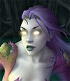

Récits Légendes de Kirin Tor Personnages Célébrités Guildes
Outils Calendrier Calendrier Illustré Mod d'interface
Informations Historiens FAQ Liens Crédits
Les légendes de Kirin Tor
halaa
==> Afficher les personnages de halaa
Adalynn / Halaa
Age : environ 20 ansSexe : Femme
Race : Mort-vivant
Faction : Horde
Formation : Démoniste
Description :

Le grand jour était enfin venu pour Adalynn, tout avait été minutieusement préparé par ses bonnes amies, elle la petite pâtissière de Valonlumiére, dernier village humain avant les vertes forets elfes de QuelThalas, allait vivre un grand moment, un grand jour, le plus beau jour de sa vie ...
Les gens lattendaient dehors et elle le savait, ils étaient tous impatient de la voir, elle la mariée, la futur femme dun noble paladin. Fini la vie simple de fille du peuple, bientôt elle connaîtrait la joie et le luxe dune vie de petite noble, car son aimé était proche de la cour du roi de Lordaeron, mais a vrai dire cela lui importait peu.
Elle avait toujours accepté son destin et sa vie, se contentant de la joie quelle pouvait offrir par ses talents de cuisinière.
Les sourires des enfants enchantés par ses pâtisserie et ses petits talents magiques, étaient son salaire et sa récompense. Cest ainsi quelle avait séduit le cur pur de son aimé, par son amour et sa dévotion pour les autres avant elle.
Adalynn navait jamais essayé de développer ses talents de magicienne, malgré les conseils de son amie Elfe, Loraya SilverHand, une des ranger de Silvermoon sous les ordre de Sylvanas windrunner. Dailleurs son amie lui avait promit quelle essayerai de faire un saut pour la cérémonie si elle arrivait a se libérer de ses obligations militaire, ce que Adalynn espérait, elle aimait beaucoup lelfe, elle sétaient rencontrées par hasard un jour ou la jeune pâtissière étaient dans la foret pour cueillir diverse petites baies pour ses gâteaux .
On frappa a sa porte, Adalynn sortit, accompagnée par sa mère adoptive, ses parents étant morts quand elle était encore toute enfant. Elle apparue sur le perron de la petite maison et tous furent impressionnés par sa beauté et la douceur de son visage dange blonds aux yeux bleus comme le ciel un jour dété, les fleurs dans ses cheveux très long et la robe blanche ne faisant que renforcer son image de créature céleste sortie tout droit dun compte de fée.
Sous les applaudissements et les pétales de roses Adalynn monta dans la petite calèche qui lamena vers la mairie ou lentendait son futur époux. Cétait magique, elle était heureuse.
Alors que le cortége arrivait en vue du bâtiment communal un groupe de cavalier arriva a bride abattue, un deux sarrêta, faisant cabrer son cheval.
La cavalière abaissa sa capuche, révélant un visage elfique, cétait loraya, son amie, finallement elle eté venue cétait merveilleux ...
-« Vous devez fuir, le fléau arrive ils ont déjà envahi les village de Soleilargent et Douxsouvenir, vous êtes le prochains, ils se dirigent vers Quel thalas, rien ne les arrêtent »
Les gens commencèrent a paniquer, les sourires de joie se crispèrent en grimace dhorreur. Adalynn regarda par dessus son épaule dans la direction que lui montrait le long doigt fin de son amie elfe, et elle vit que le ciel avait une couleur étrange et menaçante, et une odeur infâme lui monta aux narines
Loraya hurla.
-« Cest trop tard ils sont déjà la ! »
La guerrière elfe, avec une rapidité et une précision déroutante saisi son arc devant Adalynn et abattit plusieurs monstre ignobles qui arrivaient dans leur direction, en courants sur leur membres difformes Des goules, les soldats du fléau.
Tant bien que mal les elfes regroupèrent les humains du village pour les faire fuir vers la frontière sécurisée de leur royaume. Sous la protection de son amie Ranger Adalynn se dirigea vers la sortie du village, cherchant des yeux son époux.
Elle le vit, lui et ses amis paladins venus pour fêter les noces, se défendant contre les immondes suppôts de Nerzul qui commençaient a envahir le petit village, ils couvraient la fuite des villageois.
Le regard de la jeune pâtissière se fixa alors sur une ruelle adjacente ou elle vit le petit Pietrick, un des enfants du village qui courait, poursuivit par des zombis. Nécoutant que son cur aussi pur et doux que la lumière du soleil Adalynn échappant a la protection de Loraya se précipita vers le petit, elle le saisit par la main, pensant le soustraire a la vindicte meurtrière des morts vivants.
Elle saisi la première chose qui lui passait prés de la main, un balais, et aussi étonnant que cela le fut, elle renvoya dans le néant absolu les être immondes, les rossant de son arme de paysanne, comme si la lumière guidait son bras juste et pur ...
Adalynn profita de sa petite victoire pour faire fuir le garçonnet vers Loraya.
Cest alors que sortant de nulle part un chevalier terrifiant fit son apparition, vêtu dune armure de plaque noire, dun seul geste il transperça la jeune villageoise qui lui faisait face le menaçant avec un balais, lempêchant datteindre les elfes qui faisait fuir ceux qui allait devenir les soldats de sa nouvelle armée, la lame dacier pénétra Adalynn, le sang gicla maculant sa robe blanche
Elle tomba a genoux aux pieds de son assassin, tenant son ventre qui navait jamais connu la joie de donner la vie et qui ne la connaîtrait jamais plus.
Le sang coulait de plus de plus et elle sentait la vie la quitter, elle entendit les cris de son amie Elfe, des bruits de bataille, les hurlements de ses compagnons qui se faisaient massacrer, incrédule elle leva les yeux vers son meurtrier, son visage était caché par un horrible casque noir Probablement le plus mauvais de tout les hommes pour assassiner une jeune mariée.
Adalynn tomba alors face contre terre et rendit son dernier souffle dans la poussière qui devenait boue alors qu'elle se gorgeait de son sang, ses pensées allant vers celui qui aurait pu être son mari, priant pour quil survive a se massacre, elle pensa aussi a son amie Loraya et tout les gens du village. Elle ne pensa pas a elle, elle navait jamais pensé quaux autres et avait toujours servi le bien, toujours avait été quelquun de bien, même si la vie navait pas toujours été tendre avec elle.
La silhouette sombre rabattit la capuche de sa cape, pour cacher les larmes de sang qui lui coulaient douloureusement des yeux, et vérifia le bandage qui cachait larticulation de son bras gauche.
Adalynn, la belle et douce, humaine était morte et tout ces souvenirs pénibles qui vrillaient son cerveau mort ne lui rendrai pas la vie. Il ne restait plus que Halaa, la réprouvée, le cadavre animé par la volonté du roi liche.
Seule dans la nuit elle avait décidé de quitter undercity pour marcher dans les bois sombres, a la recherche de la vérité sur ce quelle était vraiment, cétait dangereux car même si elle était une morte vivante dautre créature toujours au service du fléau erraient en ces lieux et le pire qui puisse lui arrivait serait quil la capture pour la remettre au service du maître des morts.
Mais dans un sens cela ne valait til pas mieux ? Sylvanas Windrunner, qui elle aussi était devenu une morte vivante, une Dark ranger, lui avait rendu sa conscience et sa personnalité comme a des centaines dautre reprouvés Mais cétait pénible pour Halaa, son cur pur avait été sali, son âme dange damnée et son corps parfait rongé par la vermine et la corruption Il ne restait rien dAdalynn la douce villageoise amie des enfants et qui aimait un paladin, la démoniste quelle était devenue ne méritait quune chose : la mort.
Au détour dun chemin la réponse a sa prière arriva, deux zombi du crépuscule lassaillir, elle ne se défendit pas La mort enfin Mais alors que les créature la rossait une troisième silhouette fit alors son apparition, imposante, impressionnante , un tauren cétait la première fois quelle en voyait un, dun geste il renvoya les zombis a la tombe. Puis il se retourna vers la démoniste qui avait été renversée au sol par lattaque des monstres.
« Je suis Corneauvent, je viens a Brill pour affaire, et toi jolie morte, qui es tu ? »
Le tauren lui tendit la main, et Halaa su tout de suite en se relevant que la lumière ne lavait pas abandonnée.
- Les miens mappellent Halaa. Je suis démoniste et je cherchais la solitude dans les bois.
A létonnement de Halaa le Tauren ne broncha pas lorsquelle énonça sa profession magique.
- Je ne voulais pas déranger ta solitude lamie, mais je suis étranger en ces terres et tu semblais en bien mauvaise compagnie, je vais te laisser alors.
Halaa regarda les zombis a ses pieds puis le tauren massif.
-Pardonne moi, je ne voulais pas toffenser, je te suis reconnaissante de ton aide et si tu le désire je puis taccompagner a Brill, je connais la région.
-Je ne dis pas non, cet endroit est vraiment différent de Mulgore ma contrée natale, cest assez déroutant et triste de voir la nature dans cet état.
-Je suis daccord, les lieux sont le reflet de ceux qui les habite. Regarde ce que je suis
Le tauren eu un sourire attristé, il sentait bien que la reprouvée en face de lui nétait pas dans un de ces meilleurs jour, et commençait a se demander si le nom de Halaa ne lui avait pas été donnée en relation avec son tempérament mélancolique.
-Tu es de loin la reprouvée la moins détériorée que jai vu jusqu'à présent, et ton joli visage inspire confiance.
Halaa leva les yeux vers le Tauren, ils était luminescent et on ne pouvait discerner ni pupille ni iris dans cet amas de lumière jaunâtre.
Se faisant elle dévoila davantage son visage, celui dune jeune femme aux longs cheveux teints dans un violet sombre, retenus par un bandeau de soie.
Son teint était pale et maladif, le sang ne passant plus dans son corps mort, et elle dissimulait ses membres cagneux sous des vêtements amples.
Son bref combat contre les zombis avait dévoilé ses jambes, bandés du haut du mollet jusquau milieu de la cuisse, tentative maladroite pour cacher les os qui avaient percés a travers les chairs mortes. Elle ressemblait un peu a une momie ainsi, mais par question de coquetterie sans doutes elle préférait cela.
La reprouvée emmena le Tauren jusqu'à Brill, en fait ils nétaient pas très loin du village car Brill accueillait une base de transport Aerien gobelin reliant directement les continents de Lordaeron ou ils se trouvaient a Kalimdor, endroit doù venait Corneauvent..
Pendant que le Tauren échangeait les produits de son travail de taneur avec les artisans locaux, Halaa invoqua son compagnon démoniaque Garrin, le diablotin.
- Ce nest pas comme ça que tu échapperas a ta misérable existence, la morte.
- Je te dispense de commentaires, sale petit monstre, je voulais juste savoir si tu avais fini de ranger mes appartements.
- Et ce ne fut pas long vu le rang impressionnant que vous occupez dans la hiérarchie de votre peuple, O Adalynn.
- Je tinterdis de mappeler ainsi, la prochaine fois je te noie dans de leau bénite !
- Euh, non, bon ok on va éviter. Que puis-je faire dautre pour vous être agréable?
- Te taire et me suivre, ignoble petit bavard.
Garrin ne répondit pas, même si lenvie ne lui en manquait pas, bien sur Halaa nétait plus la maîtresse cruelle et froide quelle avait été mais il ne préférait pas la chatouiller, ne se rappelant que trop les coups de fouets et autres brimades
Ses tractations finies Corneauvent revint prés de la démoniste, alors que les autres habitants de la ville, des cadavres animés tout comme Halaa, sactivaient donnant un semblant de vie a ce village fantôme .
Tout était gris et obscur, mort à des lieues a la ronde, malsain et étrange.
Il engagea de nouveau la conversation :
- Mais quest ce donc que ce petit personnage ?
- Garrin, mon serviteur, il nest pas agressif.
- Cest un démon Je vais retourné chez moi, mes affaire ici sont finies, cela vous direz til de visiter mon pays ?
- Oh he bien, on ma confiée certaines taches ici Mais jai tout mon temps après tout, donc si cela ne vous dérange pas, oui jaccepte linvitation.
Les deux étranges compagnons se dirigèrent alors vers la tour des zeppelins, moyens de transports intercontinental, exploitée par des Gobelins, race de petits humanoïdes verdâtre aux grands talents dingénieurs.
Plus d'infos sur Adalynn / Halaa >>>
Lire les 10 récits de Adalynn / Halaa >>>
Reena
Age : dans les 18 ansSexe : Femme
Race : Humain
Faction : Alliance
Formation : Prêtre
Description : * Au detour d'un des nombreux casier des archives des services de renseignement de stormwind on peu trouver le dossier suivant *
Rapport du Si:7
Nom : Stonefield
Prenom : Reena
Yeux : Bleus
cheveux : blond mi long
Taille : 1m80
Poids : environ 58 kg
Age : Probablement 18 ans
Parents : Inconnus, possiblement descandante de la branche nord de la famille stonefield.
Naissance : Inconnue.
Affiliation : Ex Croisade Ecarlate (Vestale pourpre), Pax legatum (affiliée)
Formation : Inquisitrice-exorciseuse de la Phalange, spécialisée dans l'interogatoire et l'elimination des morts vivants et des démonistes. Reconvertie (il semble).
Complice/relation : Frequentes relations avec l'activiste pacifiste elfe de la nuit : Meeleloo (cf dossier 69.789). As deja été vue en compagnie de plusieurs membre de la pax Legatum dont le paladin Pergryn (cf dossier 456.786), et de la démoniste Démogorgone (Cf dossier 666.876). Soupçonée d'entrenir des relations avec une reprouvée, possiblement Halaa Darksorrows (Cf dossier 11.22).
Statut : Surveillée.
Résidence actuelle : Northshire.
Dangerosité : Basse.
--------------------------------------------------------------------
Rapport :
***************************
Reena Stonefield a été laissée non loin de l'abbaye de northshire agonisante, par un agent du fleau, la vaillance des gardes a mise en fuite la chose, il y a de cela quelques mois. Aprés recoupement et surveillance il nous est paru evident que cette jeune fille a été membres de la mouvence eclarlate.
Depuis son arrivée elle milite pour le droit a la paix et l'egalité pour tous, voir la compassion pour les réprouvés, son amitié avec la Pax legatum et l'elfe Sedicieuse Meeleloo n'est surement pas étrangere a tout cela. Il est aussi possible que cette ancienne fanatique ai été reconditionnée lors de son séjour a undercity.
Il ne serait pas impossible qu'elle serve d'agent infectieux, et/ou d'assassin mentalement reprogramé.
C'est pour ces raisons qu'elle est sous surveillance, comme d'autres sujets du même genre.
Fin de rapport
Plus d'infos sur Reena >>>
Loraya
Age : inconnuSexe : Femme
Race : Mort-vivant
Faction : Horde
Formation : Chasseur
Plus d'infos sur Loraya >>>
==> Voir la galerie d'images de halaa